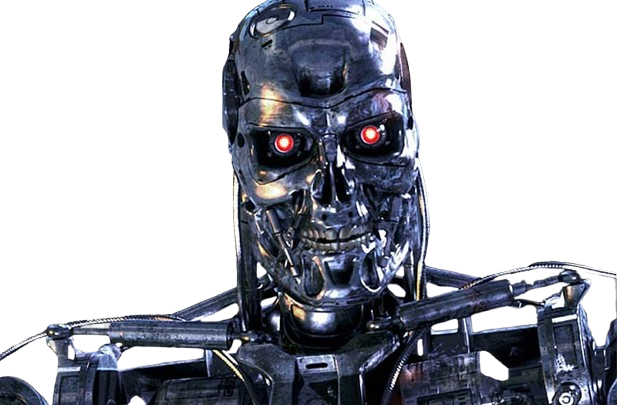
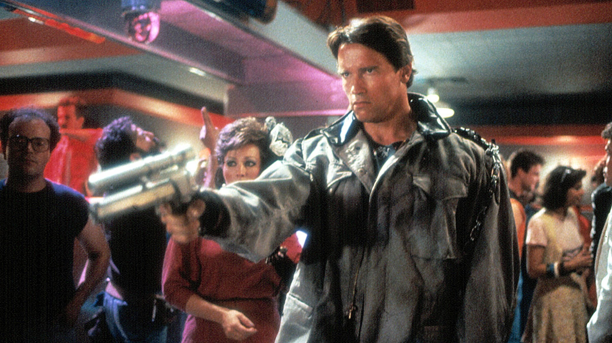

The Terminator(1984) is the first of the series:
The Terminator (1984) Terminator 2: Judgment Day (1991) Terminator 3: Rise of the Machines (2003) Terminator Salvation (2009) Terminator Genisys (2015) Terminator: Dark Fate (2019)

Starring:
Plot: A cyborg is sent from the future on a deadly mission. He has to kill Sarah Connor, a young woman whose life will have a great significance in years to come. Sarah has only one protector - Kyle Reese - also sent from the future. The Terminator uses his exceptional intelligence and strength to find Sarah, but is there any way to stop the seemingly indestructible cyborg ?